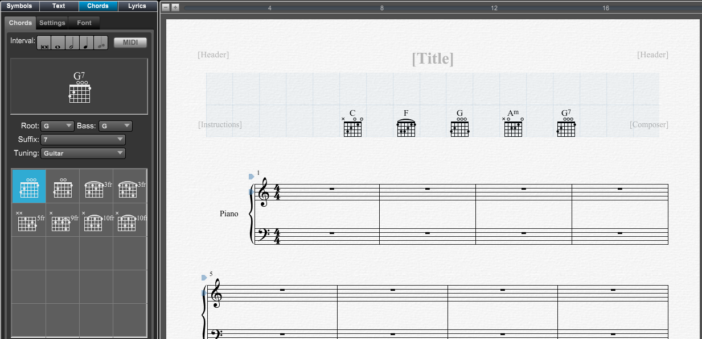

Tools Panel - Chords Settings
Tools Panel - Chords Settings
If Tools Panel is not showing click on the Score Tools button at top left of Control Bar and then click on the Chord section in the header if it's not active.
You can also type "Ctrl[Cmd]-Shift-C" to go directly to the Chord section.
Then click on the Settings tab.
.

|
Settings - Allows you to choose different options for chords entered into your score.
How the chord will appear when entered into the score.
Suffix Display - The chord appearance
- Type - Select the suffix type to change settings. (Major, Minor, Major 7, Sus,/Add,/Omit, Aug,dim,half-dim)
- Spelling - Select how to display the suffix type.
- Position - Select the suffix position. (Baseline, Superscript).
- Size - Select the suffix size.
- Prefer half-dim over m7b5 - Check this is you wish to display m7b5 chords as half-diminished chords.
- Replace omit with no - Check this is you wish to display 'omit' as 'no'.
- Bass on bottom - Check this if you wish to display the bass below the root.
- Vertical, Jazz style 1, Jazz style 2. Choose how the bass is displayed below the root.
|
Parentheses Around - Suffix parentheses settings
- Alterations and extensions - Check this to enclose alterations like b5 in parentheses.
- Modifiers - Check this to enclose modifiers like sus, add, omit in parentheses.
- Major 7ths on minor chords - Check this to enclose the major 7th on minor chords.
Chord Display - Globals chord display settings.
- Large chords - Check this to quickly increase the size of chords.
- Show guitar frames - Check this to show the guitar frame with chord.
- Show solid barre - Check this to display barre on the guitar frames as a solid line instead of a slur.
- Show legend - Check this to add guitar legend area at the top of first page. See below for more informations
|
When you check the Show legend check box the first page will display a Guitar Legend area. The staves below will be moved to downward to make space for the legend.
You can then click the Chords tab to display the chord library.
To add chords to the guitar legend:
- Click the Chords tab to display the library of chords.
- Select the chord's root/bass and and type from the pull down menus or type its description. Ex. type 'g7' to select the G7 chord.
- Click on the appropriate fingering and drag it into the grid. The chord will snap into one of the cells. Note: Chords added to the guitar legend always default to showing its guitar frame.
- To move the chord to another position, simply drag it to a different cell. Press the alt[option] key to prevent snapping the chord to the grid.
Note: The grid will only be shown when the Chords tool is active.
